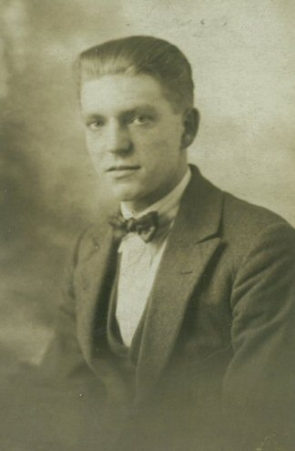

1896 – 1915
Albert (Bert) Fowler was born in 1896 in Nottingham. He enlisted in the Sherwood Foresters at the outbreak of the First World War.
Bert served with the 15th Battalion Sherwood Foresters. He was killed in action in Belgium in June 1915, aged just 19, and is commemorated on the Tyne Cot Memorial at Passchendaele.
His death was a formative tragedy for his younger sister May, who was just 12 years old when he died.
Fowler